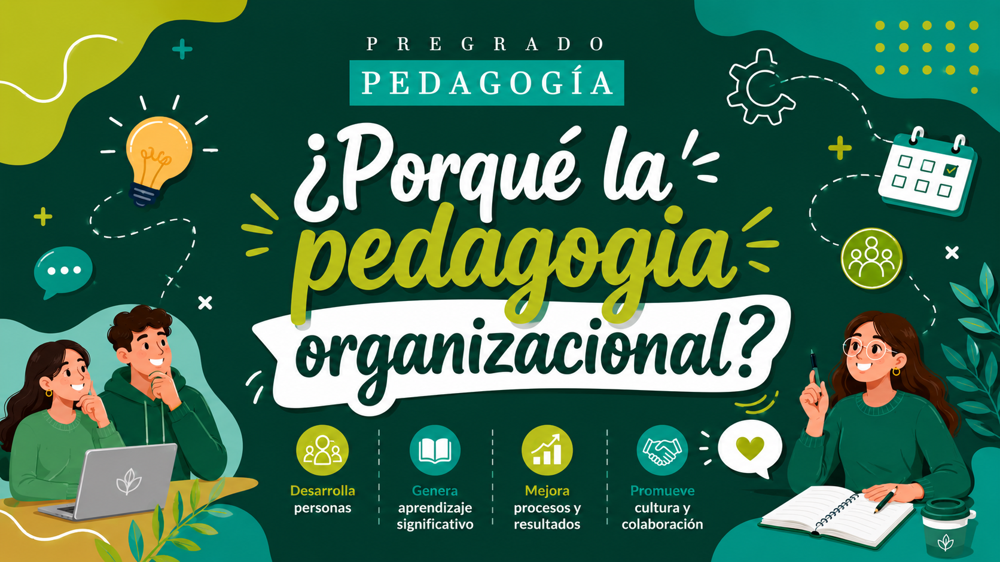

Porque las organizaciones no solo producen bienes o servicios — también forman personas. La pedagogía organizacional aplica principios educativos en el ámbito empresarial para alinear el crecimiento del talento humano con los objetivos de la organización.
El pedagogo organizacional desarrolla los conocimientos del recurso humano de una empresa para que pueda alcanzar su máximo potencial. Estas son sus funciones principales.
Identifica las necesidades de capacitación en los empleados y determina qué planes de formación son requeridos por cada área de la organización, antes de diseñar cualquier programa.
Crea y desarrolla programas personalizados a las necesidades de la empresa y el sector, que incluyen cursos, talleres y materiales de formación centrados en las necesidades específicas de los empleados.
Diseña los materiales didácticos que podrán ser utilizados en áreas de trabajo, talleres, cursos e inducciones, adaptados al contexto y las necesidades de cada equipo o cargo.
Acompaña el desarrollo y gestión del personal, creando planes de carrera definidos para cada puesto de trabajo que favorecen el crecimiento profesional y la adaptación a las dinámicas de la organización.
Evalúa constantemente sus planes de estudio y los reajusta según las áreas de oportunidad identificadas. Mide el desempeño de los programas educativos y el impacto que tienen en la operación.
Anima a los empleados a participar activamente en su proceso de aprendizaje, aplicando nuevos conocimientos en contextos reales. Esto aumenta la retención y fomenta habilidades de pensamiento crítico esenciales.
Incorporar la pedagogía organizacional requiere seleccionar el modelo adecuado para garantizar que el aprendizaje se alinea con los objetivos de la empresa y fomenta el crecimiento de los empleados.
Se basa en que los empleados aprenden mejor a través de la experiencia directa. Hace énfasis en actividades prácticas como simulaciones, juegos de rol y tareas basadas en proyectos, aplicando conocimientos teóricos en escenarios del mundo real.
Simulaciones y roleplaySe basa en interacciones individuales entre empleados con más experiencia y aquellos que buscan desarrollar sus habilidades. Los mentores ofrecen orientación, comparten conocimientos del sector y acompañan a los aprendices en el logro de sus objetivos profesionales.
Desarrollo del liderazgoCombina métodos de formación presencial con plataformas de aprendizaje digitales u online. Ofrece flexibilidad para que los empleados aprendan a su propio ritmo, garantizando formación coherente para equipos dispersos geográficamente.
Formación híbridaSe centra en el trabajo en equipo y la resolución colectiva de problemas, permitiendo a los empleados aprender unos de otros. Fomenta la comunicación, la cooperación y el conocimiento compartido, esenciales en equipos interfuncionales.
Trabajo en equipoEl crecimiento de la demanda de pedagogos organizacionales no es casualidad. Su labor marca una diferencia concreta en los resultados organizacionales.
Con planes de carrera claros y un acompañamiento continuo, los trabajadores se sienten más satisfechos con su lugar de trabajo, lo que reduce la probabilidad de que busquen otras empresas y genera ahorro en nuevas contrataciones.
Como lo señala el Foro Económico Mundial, el futuro de las empresas está en la tecnología, especialmente la inteligencia artificial. Para que eso sea una realidad, las organizaciones necesitan pedagogos que capaciten a los equipos a adaptarse a los nuevos avances tecnológicos.
Los espacios de aprendizaje que crean los pedagogos motivan a los trabajadores a compartir conocimientos y descubrimientos con otros compañeros, lo que impulsa la innovación y la colaboración interdepartamental, fundamental para el crecimiento de una empresa.
Los especialistas en pedagogía se encuentran en organizaciones de múltiples sectores: manufactura, banca, comercio, turismo y logística. Se ubican en el departamento de recursos humanos en cargos como gerente de capacitación, diseñador instruccional o coordinador de desarrollo organizacional.